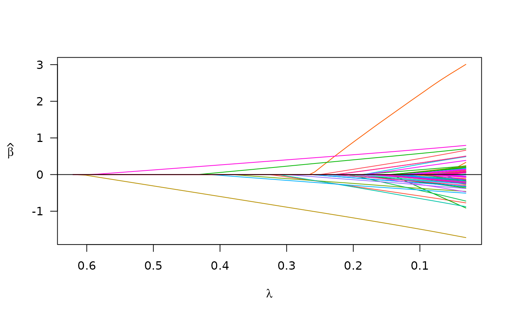

Fit a linear mixed model via penalized maximum likelihood.
Usage
plmm(
design,
y = NULL,
K = NULL,
diag_K = NULL,
eta_star = NULL,
penalty = "lasso",
init = NULL,
gamma,
alpha = 1,
lambda_min,
nlambda = 100,
lambda,
eps = 1e-04,
max_iter = 10000,
warn = TRUE,
trace = FALSE,
save_rds = NULL,
return_fit = TRUE,
...
)Arguments
- design
The first argument must be one of three things: (1)
plmm_designobject (as created bycreate_design()) (2) a string with the file path to a design object (the file path must end in '.rds') (3) amatrixordata.frameobject representing the design matrix of interest- y
Optional: In the case where
designis amatrixordata.frame, the user must also supply a numeric outcome vector as theyargument. In this case,designandywill be passed internally tocreate_design(X = design, y = y).- K
Similarity matrix used to rotate the data. This should either be: (1) a known matrix that reflects the covariance of y, (2) an estimate (Default is \(\frac{1}{p}(XX^T)\)), or (3) a list with components 'd' and 'U', as returned by a previous
plmm()model fit on the same data.- diag_K
Logical: should K be a diagonal matrix? This would reflect observations that are unrelated, or that can be treated as unrelated. Defaults to FALSE. Note: plmm() does not check to see if a matrix is diagonal. If you want to use a diagonal K matrix, you must set diag_K = TRUE.
- eta_star
Optional argument to input a specific eta term rather than estimate it from the data. If K is a known covariance matrix that is full rank, this should be 1.
- penalty
The penalty to be applied to the model. Either "lasso" (the default), "SCAD", or "MCP".
- init
Initial values for coefficients. Default is 0 for all columns of X.
- gamma
The tuning parameter of the MCP/SCAD penalty (see details). Default is 3 for MCP and 3.7 for SCAD.
- alpha
Tuning parameter for the Mnet estimator which controls the relative contributions from the MCP/SCAD penalty and the ridge, or L2 penalty. alpha=1 is equivalent to MCP/SCAD penalty, while alpha=0 would be equivalent to ridge regression. However, alpha=0 is not supported; alpha may be arbitrarily small, but not exactly 0.
- lambda_min
The smallest value for lambda, as a fraction of lambda.max. Default is .001 if the number of observations is larger than the number of covariates and .05 otherwise.
- nlambda
Length of the sequence of lambda. Default is 100.
- lambda
A user-specified sequence of lambda values. By default, a sequence of values of length nlambda is computed, equally spaced on the log scale.
- eps
Convergence threshold. The algorithm iterates until the RMSD for the change in linear predictors for each coefficient is less than eps. Default is
1e-4.- max_iter
Maximum number of iterations (total across entire path). Default is 10000.
- warn
Return warning messages for failures to converge and model saturation? Default is TRUE.
- trace
If set to TRUE, inform the user of progress by announcing the beginning of each step of the modeling process. Default is FALSE.
- save_rds
Optional: if a filepath and name without the '.rds' suffix is specified (e.g.,
save_rds = "~/dir/my_results"), then the model results are saved to the provided location (e.g., "~/dir/my_results.rds"). Accompanying the RDS file is a log file for documentation, e.g., "~/dir/my_results.log". Defaults to NULL, which does not save any RDS or log files.- return_fit
Optional: a logical value indicating whether the fitted model should be returned as a
plmmobject in the current (assumed interactive) session. Defaults to TRUE.- ...
Additional optional arguments to
plmm_checks()
Value
A list which includes 19 items:
beta_vals: The matrix of estimated coefficients. Rows are predictors (with the first row being the intercept), and columns are values of
lambda.std_Xbeta: A matrix of the linear predictors on the scale of the standardized design matrix. Rows are predictors, columns are values of
lambda. Note: std_Xbeta will not include rows for the intercept or for constant features.std_X_details: A list with 9 items: - center: The center values used to center the columns of the design matrix - scale: The scaling values used to scale the columns of the design matrix - ns: An integer vector of the nonsingular columns of the original data - unpen: An integer vector of indices of the unpenalized features, if any were specified in the design - unpen_colnames: A charater vector of the column names of ay unpenalized features. - X_colnames: A character vector with the column names of all features in the original design matrix - X_rownames: A character vector with the row names of all features in the original design matrix; if none were provided, these are named 'row1', 'row2', etc. - std_X_colnames: A subset of X_colnames representing only nonsignular columns (i.e., the columns indexed by 'ns') - std_X_rownames: A subset of X_rownames representing rows that passed QC filtering & and are represented in both the genotype and phenotype data sets (this only applies to PLINK data)
std_X: If design matrix is filebacked, the descriptor for the filebacked data is returned using
bigmemory::describe(). If the the data were stored in-memory, nothing is returned (std_X is NULL).y: The outcome vector used in model fitting.
p: The total number of columns in the design matrix (including any singular columns, excluding the intercept).
plink_flag: Logical - did the data come from PLINK files?
lambda: A numeric vector of the tuning parameter values used in model fitting.
eta: A double between 0 and 1 representing the estimated proportion of the variance in the outcome attributable to population/correlation structure
penalty: A character string indicating the penalty with which the model was fit (e.g., 'MCP')
gamma: A numeric value indicating the tuning parameter used for the SCAD or lasso penalties was used. Not relevant for lasso models.
alpha: A numeric value indicating the elastic net tuning parameter.
loss: A vector with the numeric values of the loss at each value of
lambda(calculated on the ~rotated~ scale)penalty_factor: A vector of indicators corresponding to each predictor, where 1 = predictor was penalized.
ns_idx: An integer vector with the indices of predictors which were non-singular features (i.e., features which had variation), where feature 1 is the intercept.
iter: An integer vector with the number of iterations needed in model fitting for each value of
lambdaconverged: A vector of logical values indicating whether the model fitting converged at each value of
lambdaK: a list with 2 elements,
sandU—s: a vector of the eigenvalues of the relatedness matrix K (note: K is the kinship matrix for genetic/genomic data; see the article on notation for details)
U: a matrix of the eigenvectors of the relatedness matrix
Examples
# using admix data
admix_design <- create_design(X = admix$X, y = admix$y)
fit <- plmm(design = admix_design)
s <- summary(fit, idx = 50)
print(s)
#> lasso-penalized regression model with n=197, p=101 at lambda=0.01426
#> -------------------------------------------------
#> The model converged
#> -------------------------------------------------
#> # of non-zero coefficients: 88
#> -------------------------------------------------
plot(fit)

# Note: for examples with large data that are too big to fit in memory,
# see the article "PLINK files/file-backed matrices" on our website
# https://pbreheny.github.io/plmmr/articles/filebacking.html